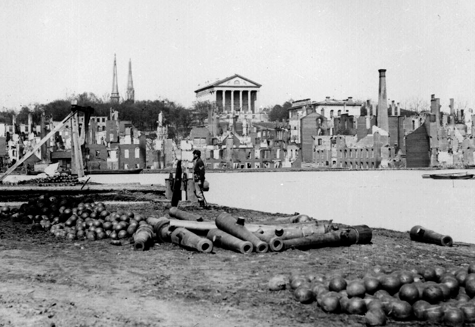

|
In 1860, the city of Richmond, Virginia had grown to
become the twenty-fifth largest city in America with a
population of nearly 38,000. Located at the falls of James
River, Richmond was one of the South's most developed and
bustling cities during the nineteenth century.
When the first shots were fired at Fort Sumter on April
14, 1861, Virginia had not yet seceded from the nation. As
a result, the Confederacy set up its government quarters in
Montgomery, Alabama. However, due to Richmond's industry as
well as its role as the seat of Virginia's government, the
government leaders were hopeful that Richmond would soon
become the permanent capitol of the Confederate States of
America.
A few days following Virginia's secession on April 17,
1861, the Virginia convention extended an invitation to the
government officials to relocate the capitol to Richmond.
On May 20th, the Confederate government voted to permanently

Much of the Confederacy's very limited
number of industrial facilities were in Richmond, most
notably the Tredegar Iron Works, shown here.
|
move the capitol from Montgomery to Richmond. This vote
marked the beginning of four years of change and conflict
for Richmond.
Many historians argue that the Confederates made a
strategic error placing their capitol in Richmond. Despite
historian's views, however, the Confederates had substantial
reason to place their capitol in Richmond. Richmond's
location, though only 106 miles from the Union's capitol,
was an ideal site for the Confederate's capitol. It was the
home of important manufacturing concerns like the Tredegar
Iron Works. Tredegar, which produced more than fifty
locomotives for Southern Railroads between 1850 and 1855
alone, was not the only manufacturing establishment in the
new capital city. Richmond was a center of transportation,
massive iron, flour, and tobacco mills in addition to its
surrounding agricultural areas. Richmond was also the
transportation hub of the South. Not only was it Virginia's
largest port city via James River and the Chesapeake Bay,
but it was also very well connected to a number of the large
cities on the Eastern seaboard due to its extensive
railroads.
Richmond was the focus of the Union military strategy
characterized by the popular war cry "On to Richmond!" As
a result, its citizens experienced a number of challenges.
The first challenge was excessive inflation. The influx of
the Rebel government-officials, workers, and their families
and slaves-as well as a considerable shortage of housing
caused this rampant inflation. Richmond's population
increased threefold to almost 100,000 by the war's end,
which included a substantial number of refugees. The city
also held 13,000 prisoners in prisons such as Belle Isle,
Libby Prison, and Castle Thunder. This dramatic increase
put a considerable amount of strain on Richmond's municipal
services such as the markets, the fire and police forces,
and the public water and gas works.
The second immediate challenge faced by Richmond's
inhabitants was a significant increase in crime. Unsettled
by the significant rise in population, the instability of
the Confederate currency, as well as the transformation of
Richmond into a crowded military town caused an increase of
muggings and prostitution. In order to prevent the further
rise of crime in and around the city of Richmond, martial
law within a ten-mile radius of the city was declared on
March 1, 1862.
In spite of the conflict that raged around the city, the
general mood of Richmond remained relatively high during the
first two years of the war. The citizens of Richmond did
their best to aid the wounded and the sick. Numerous
hospitals were established throughout the city, including
Chimborazo Hospital in the Church Hill section. There were
also at least sixty smaller hospitals run by the government,
the state, and private institutions that were located
throughout the city. At the same time, Confederate dead
began filling the Richmond's cemeteries, Oakwood, Shockoe,
and Hollywood. Famous Confederate officers and officials
such as J.E.B. Stuart, George E. Pickett and Jefferson Davis
and his family are all buried in Hollywood Cemetery.
Most importantly, Richmond was the strategic target of
the Army of the Potomac, and its capture a major aim of the
Northern war effort. As a result, a series of forts and
trenches surrounded the city in order to defend it from the
campaigns of the Union forces. Despite numerous threats by
Federal troops during the first three years of the War,
Robert E. Lee's army was successful in pushing back the
Union attack. During the spring of 1864, the Union forces
finally broke their defenses and cut the city's rail lines.
By cutting these lines, both the citizens and the
military in Richmond found it difficult to remain adequately
supplied. This feat isolated Richmond and its inhabitants
suffered greatly during the final year of the Civil War.
When Lee's lines were finally cut at Five Forks on April 1,
1865, Lee alerted Jefferson Davis that Richmond must be
|

Richmond in April 1865, much of the town
in ruins
|
evacuated. In response to Lee's notice, the Confederate
government abandoned the city on April 2, 1865. As the
government, military, and citizens of Richmond fled the
city, they destroyed not only the city's supplies of tobacco
and cotton, but they also set fire to bridges and railroads
to make the city inaccessible. Due to the high winds, the
fires spread throughout the city with unprecedented speed, a
task that proved to be too large for the Richmond's firemen
to control. As a result, this evacuation fire consumed more
than 800 buildings in the downtown area; Richmond literally
lay in smoking ruins.
After the destruction of the nation's capitol, Lee's army
did not last a week. On April 7, 1865, General Lee
surrendered to General Ulysses S. Grant at the Appomattox
Court House. The short amount of time it took for the
Confederate Army to surrender demonstrates how vital
Richmond had been as both a place and a symbol to Lee's army
throughout the four years of the Civil War.
Though Richmond was no longer the industrial and
transportation hub of Virginia, it did remain the capitol
following the war. Today it serves as a living museum of
the Lost Cause. Monument Avenue, a street lined with
monuments of notable Confederate leaders, the White House of
the Confederacy, and the Lee House all serve as reminders of
the history of Richmond during the four years of the Civil
War.
Source: Joan Waugh, ed., Facts on File Encyclopedia of American
History: Civil War and Reconstruction, 1856 to 1869 (New York: Facts on
File, 2003), 303-304.
|